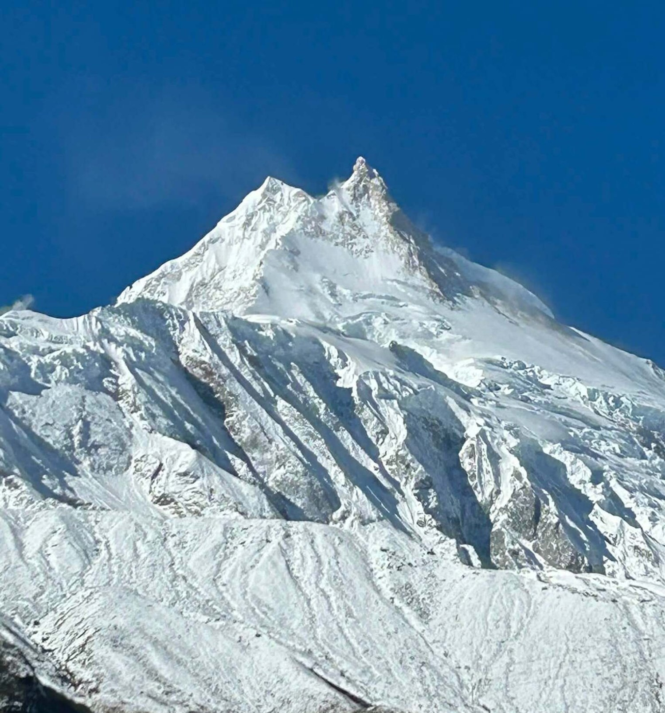
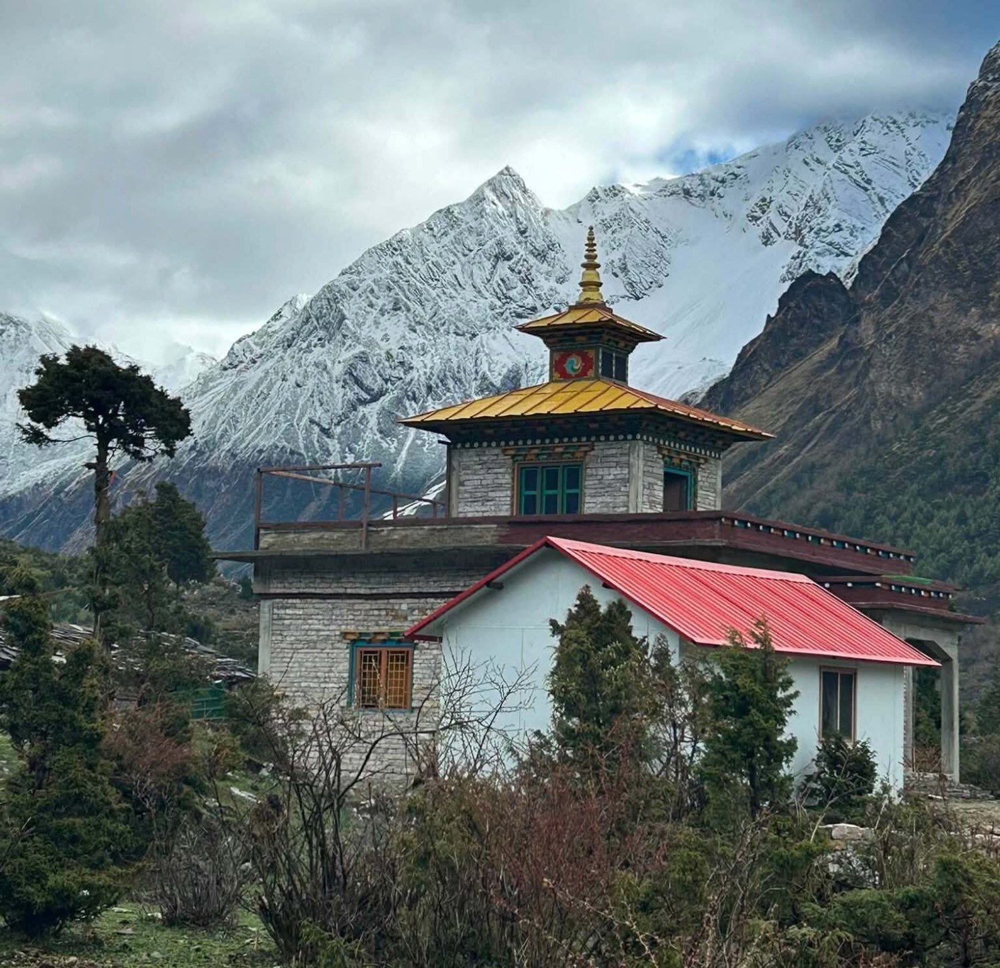
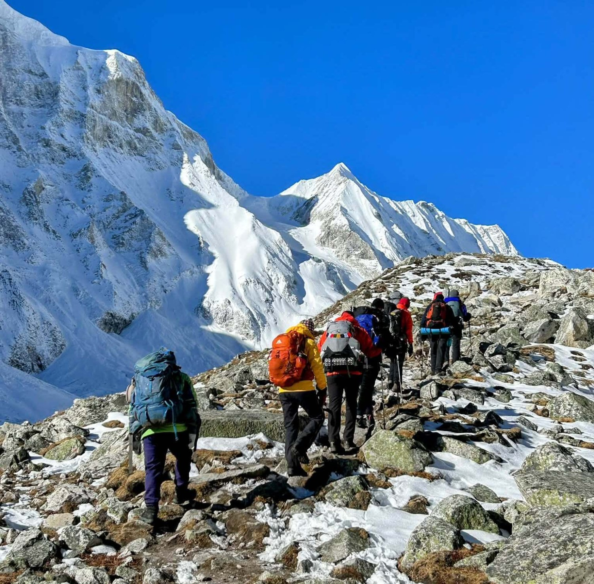
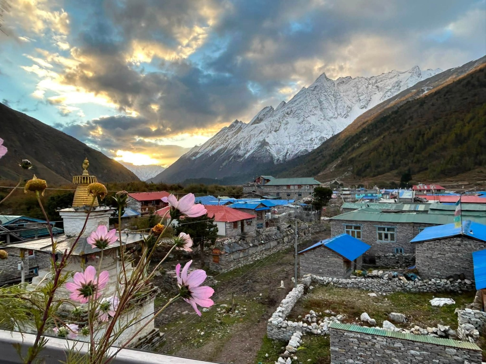
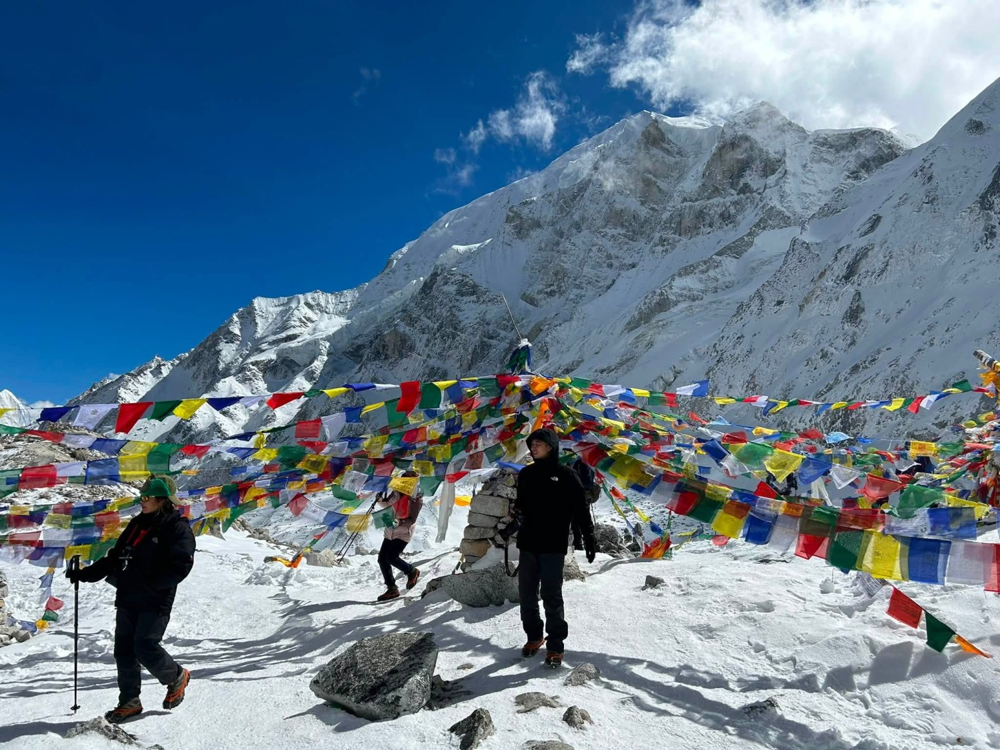

The Manaslu Circuit Trek is one of the most rewarding restricted area Trekking in Nepal, taking you through terraced farmland, dense rhododendron forest, and high alpine desert before you climb over the Larkya La Pass at over 5,100 meters. But the trail's beauty depends heavily on when you walk it. Get the timing right, and you'll trek under clear skies with the Manaslu massif towering above you. Get it wrong, and you could be staring at a wall of cloud, slogging through mud, or turned back at the pass by fresh snow.
Weather, temperature, trail conditions, and visibility at Larkya La Pass all shift dramatically across the year, so choosing the right season is arguably as important as choosing the right route. This guide breaks down the best time to do Manaslu Circuit Trek Package , month by month, so you can plan a trip that matches the experience you're after.

What Is the Best Time to Do Manaslu Circuit Trek?
In general, spring (March to May) and autumn (September to November) are the two best windows for the Manaslu Circuit Trek. Both seasons offer:
- Stable, predictable weather patterns
- Clear views of Manaslu, Himlung, and the surrounding peaks
- Comfortable daytime temperatures for trekking
- Firm, dry trail conditions
- Strong visibility for photography, especially near the pass
Outside these two windows, trekking is still technically possible, but it comes with real trade-offs in comfort, safety, and views, which we'll cover below.
Manaslu Circuit Trek in spring (March to May)
Spring is when the Himalayas wake up. Snow starts retreating from the lower passes, forests turn green, and rhododendrons bloom in shades of red, pink, and white along the mid-hill sections of the trail.
Manaslu Circuit Trek in March
March marks the start of the main spring trekking season. Days are still cool, particularly at higher camps, but conditions improve steadily as the month goes on. Rhododendron blooms begin to appear at lower elevations, and mountain views become progressively clearer as the last of the winter haze clears out.
Manaslu Circuit Trek in April
April is widely considered one of the best months on the entire Manaslu calendar. Daytime temperatures are pleasant for walking, visibility toward the high peaks is excellent, and the rhododendron forests are typically at their fullest bloom. If photography and greenery are priorities for you, April is hard to beat.
Manaslu Circuit Trek in May
By May, lower elevations warm up noticeably, and trekking conditions remain good through most of the month. That said, pre-monsoon cloud build-up tends to increase toward the end of May, so afternoon haze and occasional showers become more likely as you approach June.

Manaslu Circuit Trek in Autumn (September to November)
Autumn is the other headline season, and for many trekkers, the better one. It follows the monsoon, so the hills are freshly washed and the air is unusually clear.
Manaslu Circuit Trek in September
Early autumn is a transition month. The monsoon is winding down, so trails can still be a little damp and visibility is only gradually improving. Landscapes, however, are at their greenest and freshest, since the rains have just cleared the dust and haze from the air.
Manaslu Circuit Trek in October
October is generally regarded as the best month for the Sort Manaslu Circuit Trek. Weather is stable, skies are consistently clear, and mountain views are about as good as they get. This is also the month with the most favorable conditions for crossing Larkya La Pass, since snowfall is typically minimal and the trail across the pass is well-defined.
Manaslu Circuit Trek in November
November brings colder temperatures, especially at higher camps near the pass, but skies usually stay clear and mountain scenery remains excellent. Crowds thin out toward the end of the month as winter approaches, which makes late November appealing if you prefer a quieter trail.

Can You Do Manaslu Circuit Trek in Winter?
Winter (December to February) is the low season on the Manaslu Circuit, and for good reason:
- Temperatures drop sharply, particularly above 4,000 meters
- Snow accumulates at higher elevations
- Larkya La Pass can become difficult, or in heavy-snow years, temporarily inaccessible
- Trekker numbers fall significantly
- Extra preparation, proper cold-weather gear, and an experienced local guide become essential
Winter trekking isn't impossible, and some experienced trekkers do choose this season specifically for the solitude, but it demands more caution, flexibility, and a guide who knows current pass conditions.
Can You Do Manaslu Circuit Trek During Monsoon?
Monsoon season (June to August) is the other period most trekkers avoid on Manaslu:
- Heavy rainfall affects large parts of the route
- Trails become slippery and harder to navigate
- Leeches are common at lower, forested elevations
- Landslides and road disruptions can occur, especially on the approach roads
- Cloud cover frequently blocks mountain views
There's a useful exception worth knowing about, though: the Manaslu region sits partly in a rain-shadow area, meaning some upper sections can experience noticeably drier conditions than Nepal's wetter southern slopes. It's not a reason to plan a monsoon trek around, but it does mean the region isn't uniformly washed out the way some other routes are during these months.

Manaslu Circuit Trek Weather and Temperature by Month
Month | Weather | Mountain Views | Trekking Condition |
January | Very cold | Good when clear | Difficult |
February | Cold | Good | Difficult |
March | Cool | Good | Good |
April | Pleasant | Excellent | Excellent |
May | Warm | Good | Good |
June | Wet | Limited | Difficult |
July | Wet | Limited | Difficult |
August | Wet | Limited | Difficult |
September | Improving | Good | Good |
October | Stable | Excellent | Excellent |
November | Cool/Cold | Excellent | Excellent |
December | Very cold | Good when clear | Difficult |
Best Month for Manaslu Circuit Trek
If you only take one month-specific piece of advice from this guide, make it this: October is the strongest overall choice for the Manaslu Circuit Trek. It combines stable weather, the clearest views of the season, and the safest conditions for crossing Larkya La Pass. That said, October isn't the only good option. April is an excellent alternative if you want rhododendrons in bloom alongside strong mountain visibility, and November works well if you're after cold, crisp, clear days with fewer trekkers on the trail.

Best Time to Cross Larkya La Pass
At 5,106 meters, Larkya La Pass is the technical and psychological high point of the trek, and weather conditions there matter more than anywhere else on the route:
- Wind and snowfall at this altitude can change rapidly and make the crossing far harder than a typical trekking day
- Visibility is critical for navigation, since the route across the pass isn't always obvious in poor conditions
- Early morning crossings are standard practice, since winds and cloud cover tend to build later in the day
- Acclimatization in the days leading up to the pass matters as much as the weather itself, since altitude sickness is the more common reason crossings go wrong
October and April generally offer the most reliable window for a smooth pass crossing.
Manaslu Circuit Trek in Spring vs Autumn
Feature | Spring | Autumn |
Mountain Views | Excellent | Excellent |
Weather | Stable | Very stable |
Flowers | Excellent | Limited |
Temperature | Comfortable | Comfortable |
Crowds | Moderate | Higher |
Photography | Excellent | Excellent |
Both seasons deliver strong trekking conditions, so the choice often comes down to preference rather than a clear winner. If blooming rhododendron forests matter to you, spring has the edge. If you want the most reliably clear skies and don't mind slightly busier trails, autumn usually wins out.
Which Season Should You Choose for Manaslu Circuit Trek?
- Best overall: October
- Best for flowers: April
- Best for clear mountain views: October–November
- Quieter trekking: March or late November
- Avoid if possible: Peak monsoon (July) and severe winter periods (January)
- Tips for Choosing the Best Time for Manaslu Circuit Trek
- Check weather and pass conditions in the days before departure, not just the seasonal averages
- Build in enough acclimatization days regardless of which season you trek in
- Pack appropriate clothing for sharp temperature swings between valley floor and high camp
- Carry rain protection even in the "dry" seasons, since mountain weather can shift quickly
- Prepare mentally and logistically for changing conditions near the pass
- Start early on your Larkya La Pass crossing day to beat afternoon wind and cloud
- Trek with an experienced local guide, especially if you're considering the shoulder or off-seasons
Manaslu Circuit Trek Itinerary
Day 1: Kathmandu to Machha Khola (869 m)
Drive from Kathmandu, either directly or via Arughat, following the road as far as it goes before the trail begins. This is a long driving day, roughly 7–9 hours, on progressively rougher roads.
Day 2: Machha Khola to Jagat (1,340 m)
The trail follows the Budhi Gandaki River, crossing suspension bridges and passing through small Gurung and Magar villages. Roughly 6–7 hours of walking.
Day 3: Jagat to Deng (1,860 m)
This is officially the start of the restricted Manaslu area, so permits are checked here. The trail climbs through forest and past waterfalls. About 6–7 hours.
Day 4: Deng to Namrung (2,630 m)
The valley narrows and the trail climbs steadily, with the landscape starting to shift from subtropical to alpine forest. Around 5–6 hours.
Day 5: Namrung to Lho (3,180 m)
First real mountain views begin here, with Manaslu itself becoming visible on clear days. Around 3–4 hours, a shorter day that helps with acclimatization.
Day 6: Lho to Samagaon (3,530 m)
A short but scenic day into Samagaon, one of the main villages in the region and a key acclimatization stop. Around 3 hours.
Day 7: Acclimatization Day in Samagaon
A rest day with an optional side hike to Manaslu Base Camp or Pungyen Gompa for better altitude adjustment before pushing higher.
Day 8: Samagaon to Samdo (3,860 m)
A relatively short, gentle climb to Samdo, the last village before the high pass, close to the Tibet border. Around 3 hours.
Day 9: Acclimatization Day in Samdo
Another rest day, often used for a short hike toward the Tibet border or nearby ridgelines to aid acclimatization ahead of the pass.
Day 10: Samdo to Dharamsala/Larkya Phedi (4,460 m)
A short but important day, moving up to the last camp before the pass. Around 2–3 hours, kept deliberately short to conserve energy.
Day 11: Dharamsala to Larkya La Pass (5,106 m) to Bimthang (3,720 m)
The longest and most demanding day of the trek. An early start, usually before dawn, gets you across the pass before winds pick up, followed by a long descent into Bimthang. Around 8–9 hours.
Day 12: Bimthang to Tilije (2,300 m) or Dharapani
A long descent through forest back into the Marsyangdi Valley, rejoining the Annapurna Circuit region. Around 6–7 hours.
Day 13: Tilije/Dharapani to Besisahar
Drive or trek out to Besisahar, from where a vehicle continues to Kathmandu.
Day 14: Drive to Kathmandu
Final travel day back to Kathmandu, roughly 5–6 hours by road.
Food and Accommodation During the Manaslu Circuit Trek
Unlike the Everest Base Camp Trek or Annapurna Base Camp Trek, the Manaslu Circuit Trek is still relatively remote, and this shows up most clearly in what you eat and where you sleep each night. Facilities here are simpler, teahouses are more basic, and options thin out noticeably as you climb higher. Knowing what to expect in advance makes it much easier to plan, pack, and budget for the trek.
Accommodation on the Manaslu Circuit Trek
Teahouses Are the Standard
Almost the entire route is served by teahouses (also called lodges), small family-run guesthouses that offer a bed and meals along the trail. This is a teahouse trek from start to finish, meaning you generally don't need to carry a tent or camping gear unless you're doing a specific winter or off-season expedition.
What Rooms Are Like
Most rooms are twin-share, with two single beds, a thin mattress, a pillow, and a blanket
Rooms are typically simple wooden or stone-built structures with minimal insulation
Lower down the valley (Machha Khola to Namrung), teahouses are a little more comfortable and varied
Higher up (Samagaon, Samdo, Dharamsala), rooms become noticeably more basic, colder, and smaller, since these villages see fewer visitors and building materials are harder to transport
At Dharamsala, the last stop before Larkya La Pass, facilities are at their most basic — expect a simple dormitory-style setup rather than private rooms
Hot Showers and Charging
Hot showers are available at most lower and mid-altitude teahouses, usually for a small extra fee (gas or solar-heated)
Above Samagaon, hot showers become less reliable and sometimes unavailable, especially in colder months
Charging phones, cameras, or power banks is possible at most teahouses for a fee, though at higher elevations this may be solar-powered and less consistent, Wi-Fi exists in some villages (often as a paid card) but becomes patchy or nonexistent above Samagaon
Do You Need to Book Accommodation in Advance?
Advance booking generally isn't necessary outside of peak season (October and April), since teahouses along the route have enough capacity for typical trekker numbers. During peak weeks, however, arriving earlier in the day secures the better rooms, and your guide will usually manage this for you.
Food on the Manaslu Circuit Trek
Typical Teahouse Menus
Menus follow a familiar teahouse-trekking format across Nepal, with some regional variation. Common options include:
- Dal bhat (lentils, rice, vegetable curry, and pickle) the trekking staple, and usually the best-value, most filling option
- Noodle soups and fried noodles
- Momos (dumplings), more common at lower elevations
- Fried rice and vegetable dishes
- Porridge, eggs, and pancakes for breakfast
- Tibetan bread, chapati, and other flatbreads
- Basic pasta and potato dishes, especially at higher elevations where fresh vegetables are scarce
- Why Dal Bhat Is Recommended
Dal bhat is popular with trekkers for good reason: most teahouses offer free refills, it's balanced enough to fuel a full trekking day, and it's generally the most reliably fresh option since it's cooked fresh rather than reheated. The local saying among guides, "dal bhat power, 24 hour," is only half a joke.
How Food Changes at Higher Altitude
Fresh vegetables and meat become scarcer above Samagaon, since almost everything is carried in by porter or mule
Menus shrink significantly at higher villages and near Dharamsala, often down to a handful of simple, carbohydrate-heavy options
Meat is generally not recommended at higher elevations, both for freshness and digestive reasons, since it's carried up over multiple days without refrigeration, Prices increase steadily with altitude, reflecting the cost and effort of transporting supplies
Drinking Water
- Bottled water is available at most teahouses but gets progressively more expensive higher up
- Boiled water is usually offered as an alternative, often for a smaller fee
- Many trekkers carry a water bottle with a filter or purification tablets to reduce both cost and plastic waste along the trail
Tips for Food and Accommodation on the Trek
- Carry a good sleeping bag rated for cold temperatures, since blankets alone often aren't enough above Samagaon
- Bring a headlamp, since electricity in rooms is limited or nonexistent at higher elevations
- Pack a few high-energy snacks (nuts, energy bars, chocolate) for the higher, more limited-menu days
- Stick to vegetarian meals at higher altitudes to reduce the risk of stomach upset
- Carry a reusable bottle with a filter or purification tablets to manage water costs and reduce plastic waste
- Keep some Nepali cash on hand, since card payment isn't available on the trail and ATMs disappear after the first day or two out of Kathmandu/Arughat
Frequently Asked Questions About Manaslu Circuit Trek
What is the best time to do Manaslu Circuit Trek?
Spring (March–May) and autumn (September–November) are the best seasons, with October generally considered the single best month.
Is October good for Manaslu Circuit Trek?
Yes. October offers the most stable weather, clearest mountain views, and the safest conditions for crossing Larkya La Pass.
Can I trek Manaslu in April?
Yes, April is one of the best spring months, with pleasant temperatures, strong visibility, and rhododendron forests in full bloom.
Is Manaslu Circuit Trek possible in winter?
It's possible but challenging. Expect very cold temperatures, snow at higher elevations, and a higher chance of difficulty crossing Larkya La Pass.
Can I do Manaslu Circuit Trek during monsoon?
It's not recommended. Heavy rain, slippery trails, leeches, and poor visibility make monsoon the hardest season on this route, though the rain-shadow effect in parts of the region offers some relief compared to Nepal's wetter southern areas.
Which month has the best mountain views?
October typically offers the best overall mountain visibility, with November a close second.
What is the best month to cross Larkya La Pass?
October and April both offer the most reliable conditions for a safe, clear crossing.
How cold is Manaslu Circuit Trek in November?
Daytime temperatures at lower elevations stay reasonably comfortable, but nights and higher camps near the pass get noticeably cold, especially later in the month.
Is spring or autumn better for Manaslu Circuit Trek?
Both are excellent. Spring offers blooming rhododendrons and slightly fewer crowds, while autumn typically has the most stable weather and clearest skies.
How many days are needed for Manaslu Circuit Trek?
Most itineraries run between 14 and 18 days, depending on your acclimatization schedule, starting point, and whether you extend the route toward Tsum Valley.